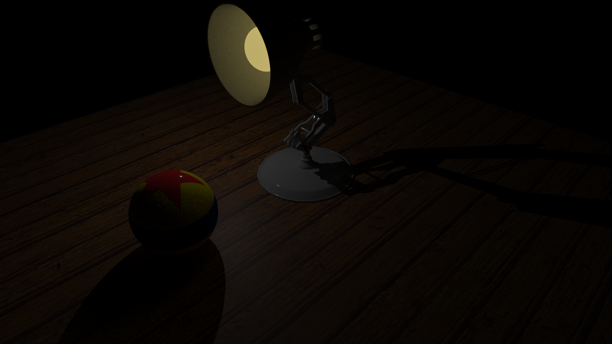

FunGT
FunGT is a C++ 3D graphics application that combines professional rendering capabilities with an intuitive interface. Built on OpenGL and ImGui, FunGT provides real-time model viewing,
material editing, and animation playback—all accessible through a clean, professional GUI.
C++20
SYCL / DPC++
GPU Compute
Physics
OpenGL
ImGui
CMake
Design Philosophy
GPU-first: algorithms are designed around massive parallelismData-oriented: memory layout matters more than abstractionsModern C++: explicit ownership and predictable lifetimesEngine as a lab: correctness → optimization → scalability
Demos
FunGT includes a growing set of interactive demos used to validate
performance, correctness, and scalability.
GPU Collision Detection
Your browser does not support the video tag.
Broad-phase collision detection implemented entirely on the GPU,
using uniform grids and parallel prefix-sum-based compaction.
Dynamic object support
Parallel cell occupancy tracking
Designed for thousands of bodies
Path Tracer (GPU)
A physically based path tracer supporting GPU execution.

Area lights & emissive geometry
PBR materials
Hot / cold data layout optimization
Experimental.
Build
git clone https://github.com/FunGTs/FunGT.git
cd FunGT
cmake -B build
cmake --build build
Roadmap
GPU-only physics pipeline
Advanced constraint solvers
SYCL-based rendering backend
Technical documentation & deep dives
Repository
https://github.com/FunGTs/FunGT
FunGT — Experimental GPU Engine • Actively developed